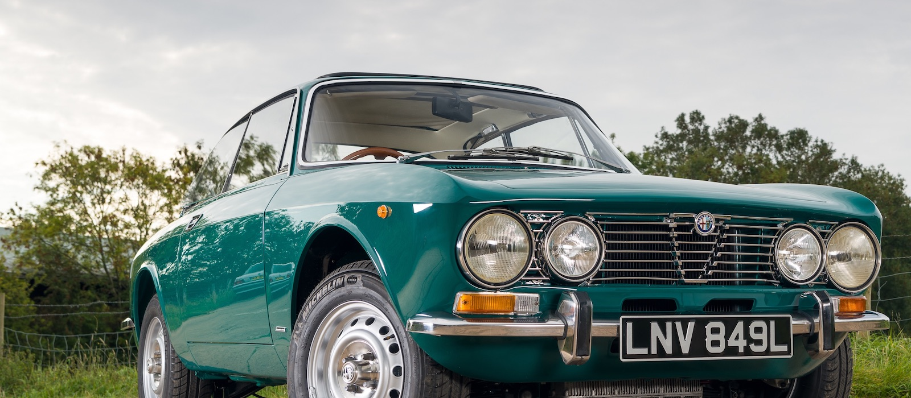
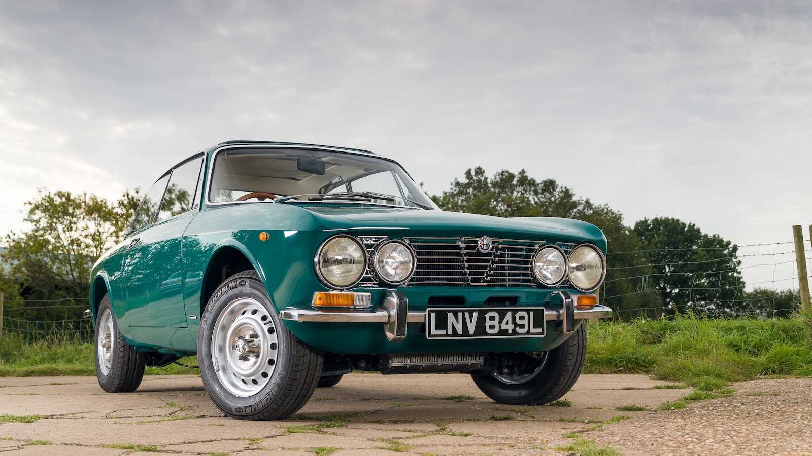
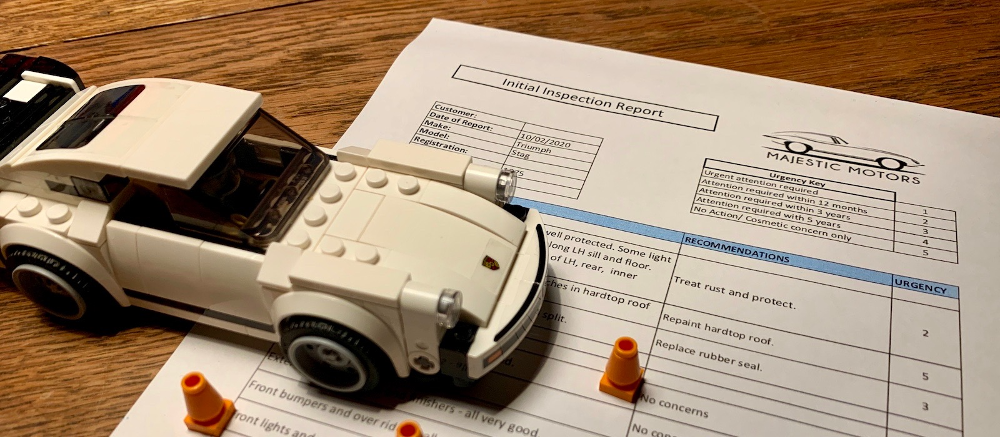
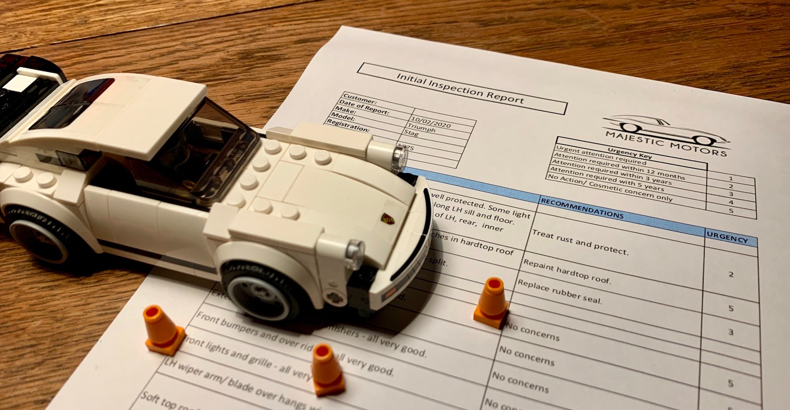
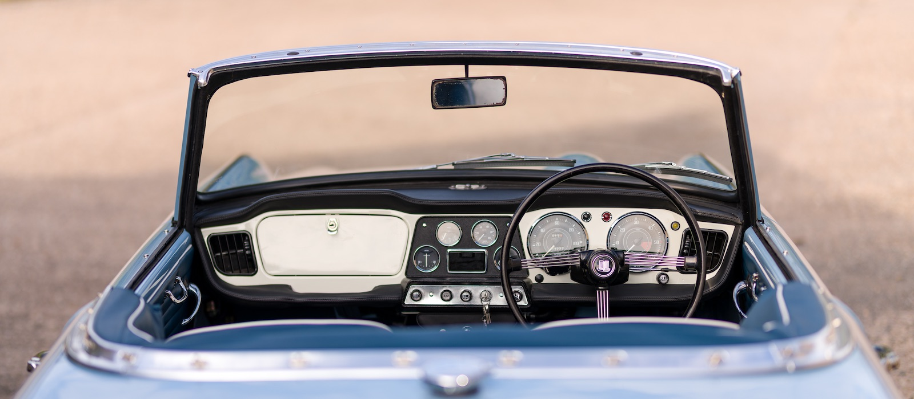
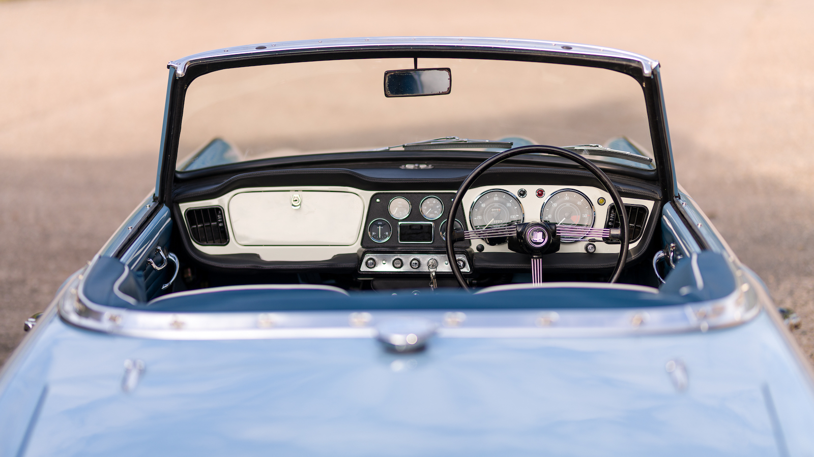

In the press:
Classic Ford May 2021
Escort Mexico Mk1
Full bare metal restoration, earliest Special Build Vehicle, featured in Classic Ford magazine
Find out more


Featured project:
Alfa Romeo 2000 GTV
One onwer since 1974
Full bare metal restoration for original keeper.
Find out more


Service:
Engineer's Inspection Report
A detailed written report on the status of your classic or potential purchase.
Find out more
Service:
Engineer's Inspection Report
A detailed written report on the status of your classic or potential purchase.
Find out more

Featured project:
Morgan 4/4
Barn stored since 1978
Full frame off restoration, retaining original panels and chassis.
Find out more


Featured project:
Triumph TR4
Assembled from bare shell
How we finished a project stalled for over four decades
Find out more